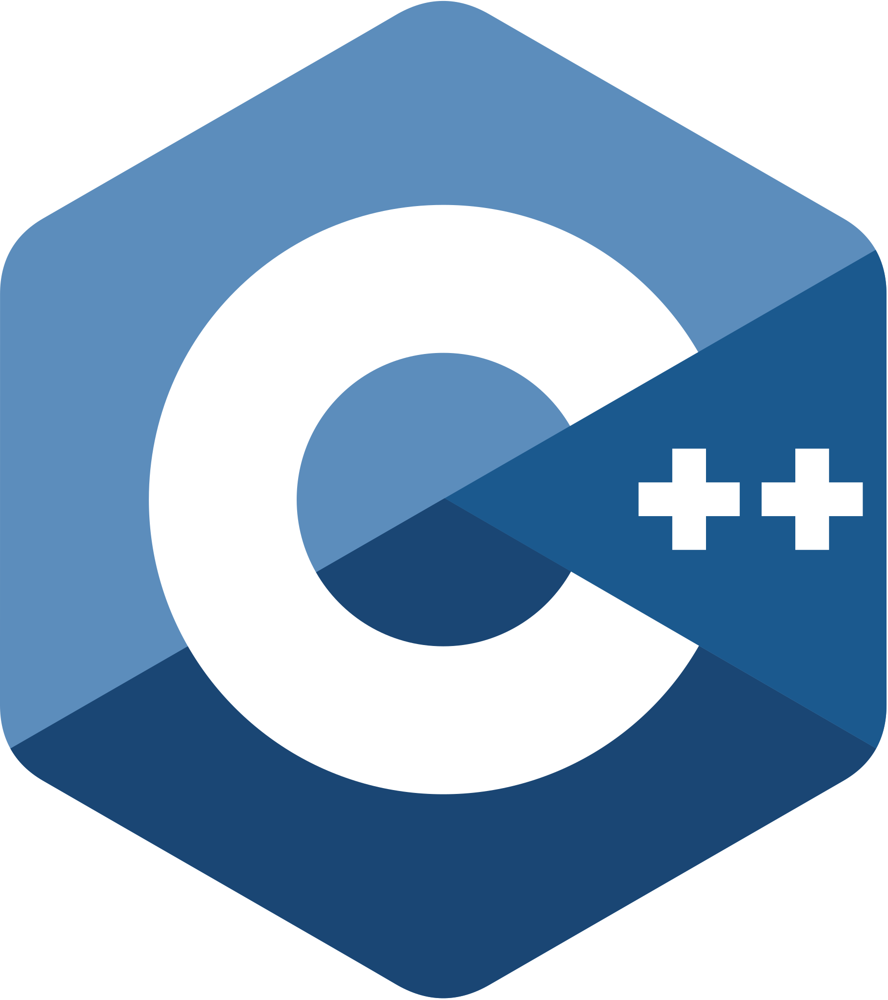
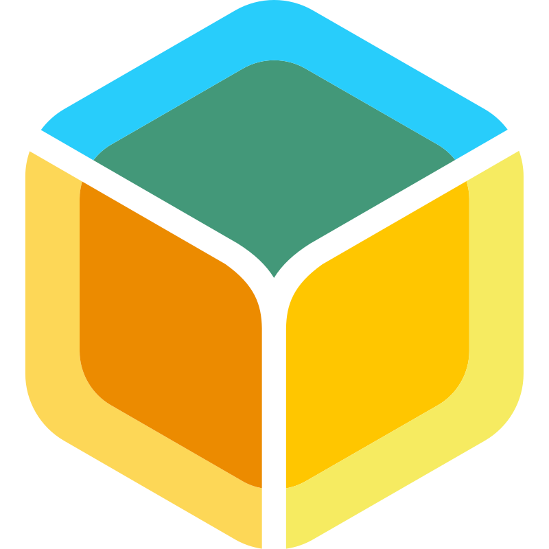
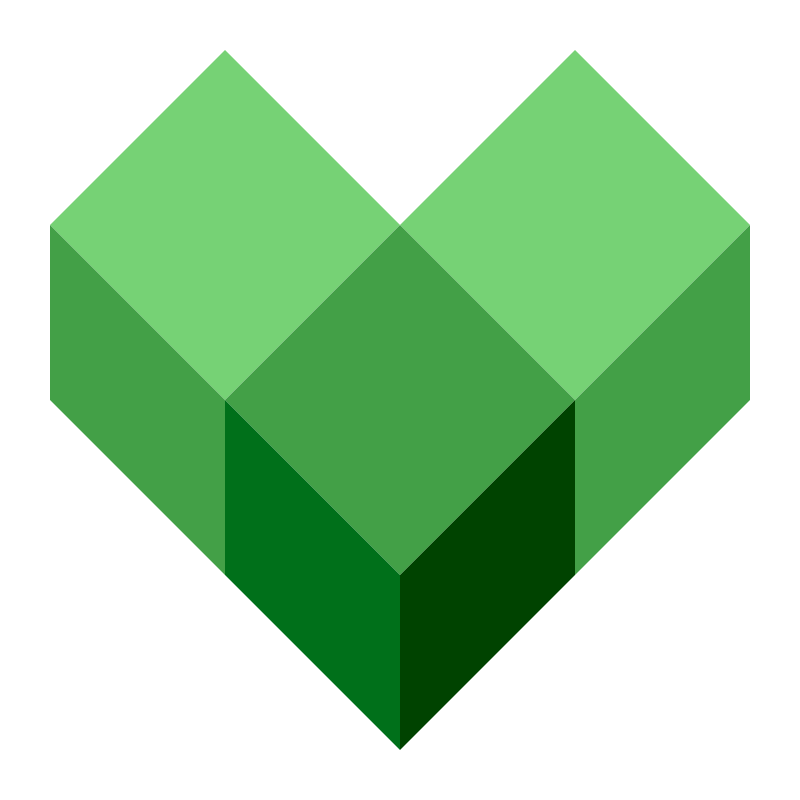
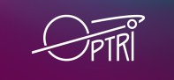
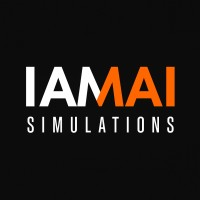
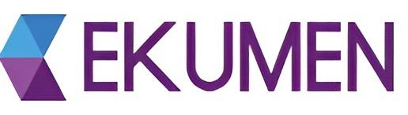

Lucas Scheinkerman
AI & Robotics Engineer
About Me
Hi there! I'm an AI & Robotics Engineer with 5+ years of experience.
Currently working as a AI & Robotics Engineer at Marvik, developing AI pipelines to automate processes in industrial heavy machinery environments!
Always looking for new awesome technical challenges, eager to learn new things and do meaningful work that impacts positively in our world. I love to learn new stuff, understand how complex systems work, and transform theoretical ideas into real things. Translated into my work, I love all aspects of complex systems design and implementation.
From coding low-level C routines, to solving high-level problems using the most suitable data structures and algorithms, I find exciting each and everyone of the layers.
Tech Stack & AI Systems
Languages

C++ Python
Python
 Java
Java
AI Systems
Frameworks & Tools
 Android
Android
 Docker
Docker
Infrastructure
Docker

BalenaOS Git
Git
 CMake
CMake

BazelLanguages
 Spanish
Spanish
 English
English
 Hebrew
Hebrew
Work experience
AI & Robotics Engineer
MarvikJanuary 2026 - Present
Design and implementation of an embedded virtual assistant system, aimed at industrial heavy machinery environments (such as loaders, excavators, or lifts).
- ASR (Automatic Speech Recognition)
- RAG (Retrieval-Augmented Generation)
- TTS (Text-to-Speech)
- Model fine-tuning

Computer Vision Engineer
OptrimentJanuary 2025 - January 2026
- Responsible for the C++ build infrastructure
- Implementaion of live Computer Vision pipelines using PyTorch, running on Jetson Nano devices.
- Deployment of pipelines in several machines using Docker-compose and GCP.
- Fine-tuning and training state-of-the-art Vision Transformer models.

Robotics simulation Engineer
IAMAI SimulationsJune 2023 - January 2025
Developed simulation tools to generate artificial datasets for training
AI-based aircraft navigation algorithms, ensuring compliance with specific requirements.
Used C++ for core development and Unreal Engine for high-fidelity
visual rendering, enhancing the realism of simulations.
Also I employed Python for implementing ROS nodes and handling API
client calls, effectively integrating various technologies to produce
robust and accurate training environments.

Infrastructure Software Engineer
EkumenSeptember 2019 - May 2022
- Designed and implemented data collection and ingestion pipelines using Python’s Apache Beam SDK, optimizing data processing workflows.
- Developed Android applications focused on sensor data collection, augmented reality (AR) features, and live data plotting using Android Java SDK and C++.
- In charge of code integration, testing, maintenance, and review to ensure high-quality software.
- Mentored new hires in introductory-level C++ training, enhancing their foundational programming skills.
- Conducted technical interviews, assessing candidate qualifications and technical expertise.
- Participated in research group using ROS and SLAM techniques.